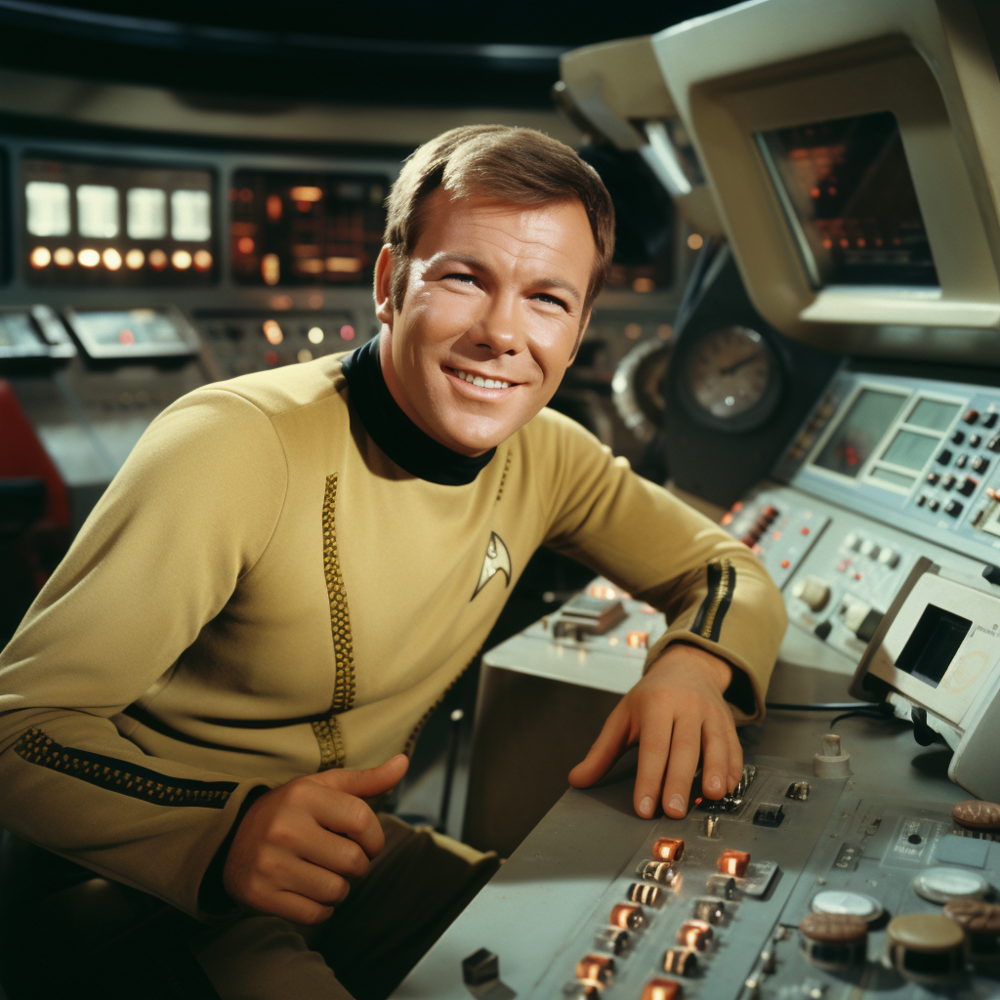
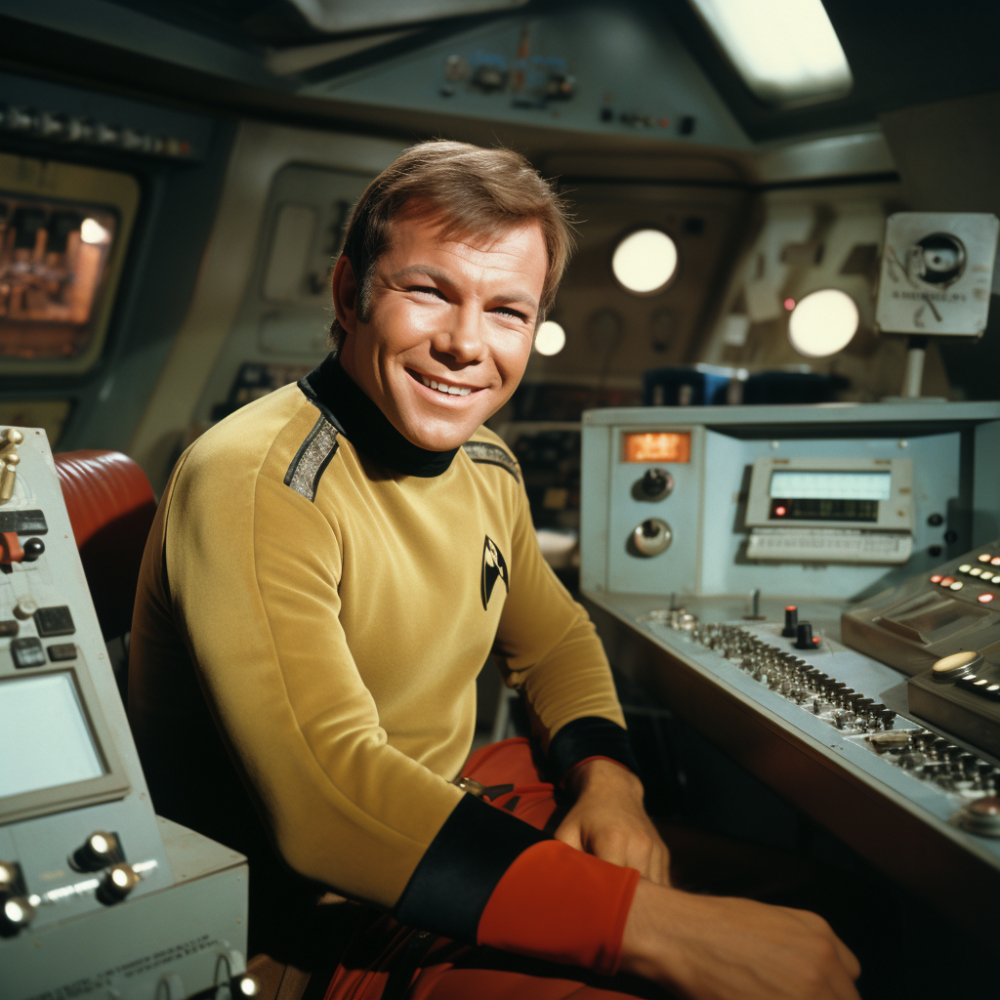
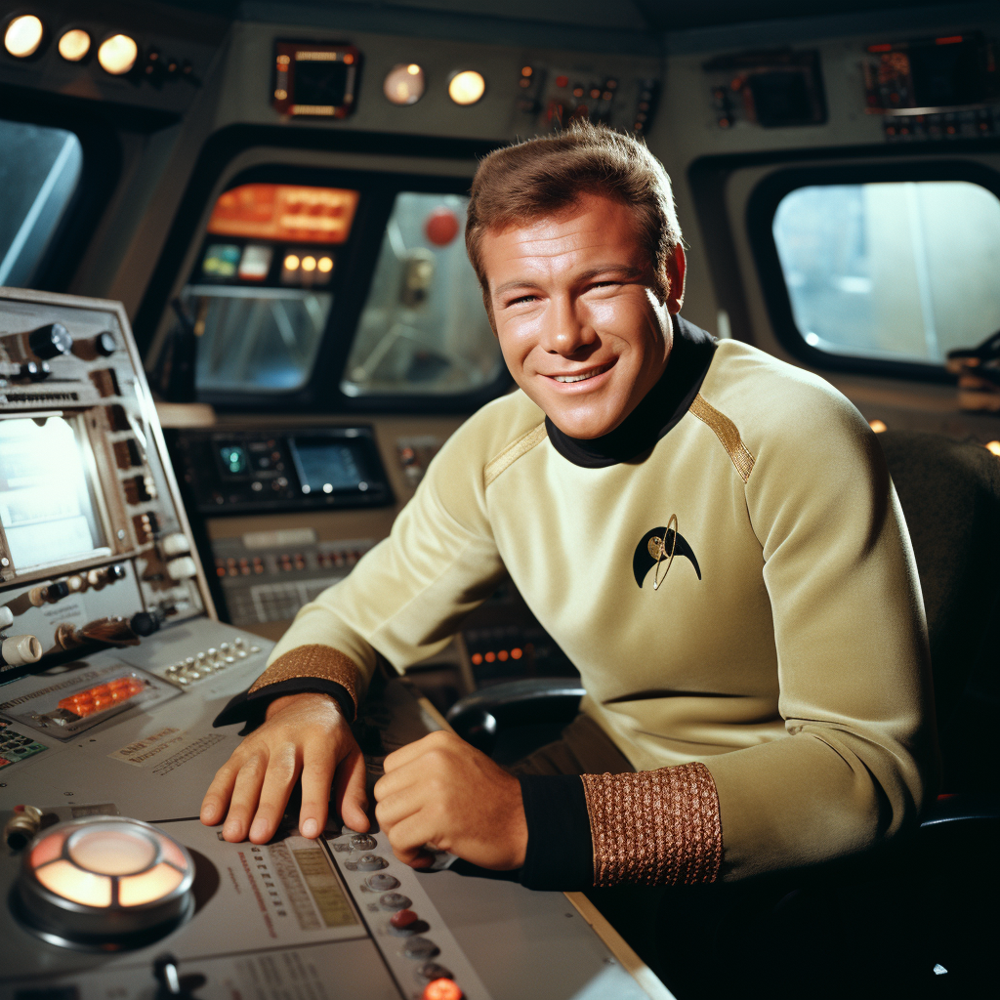
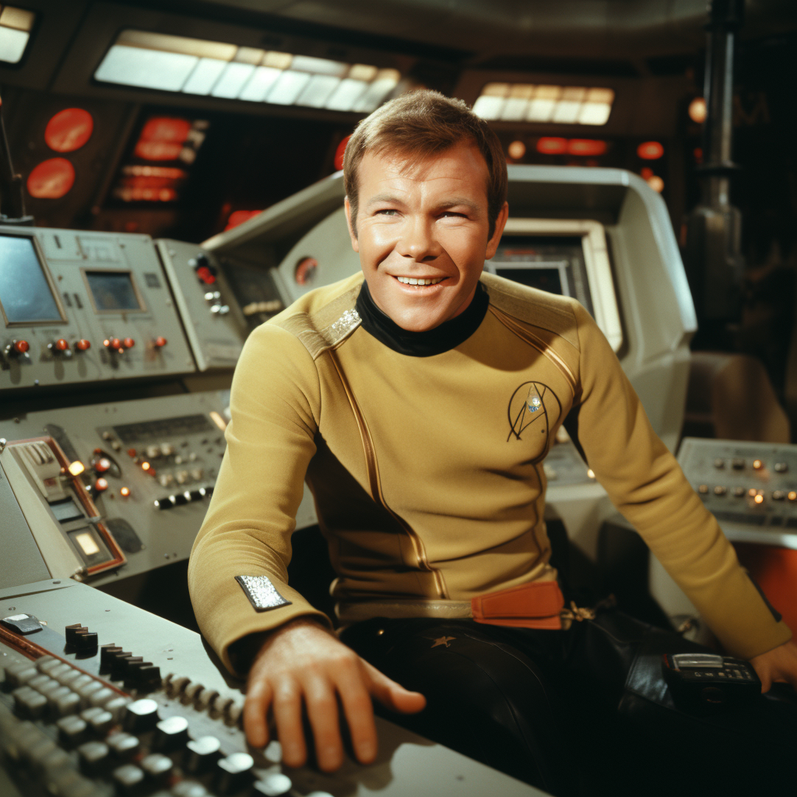
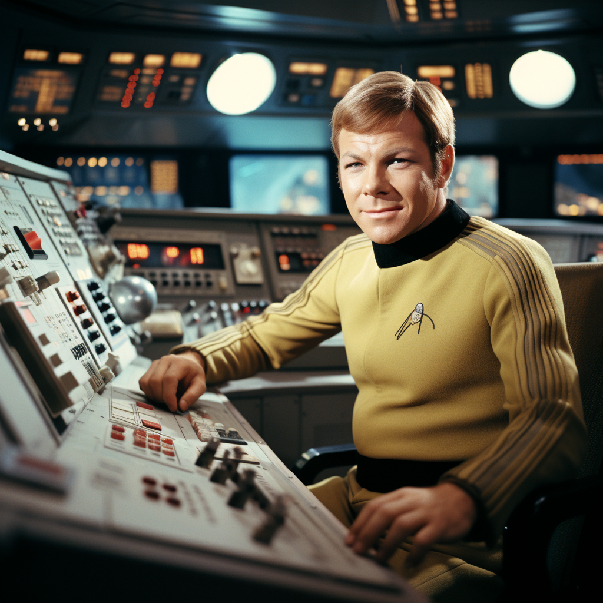
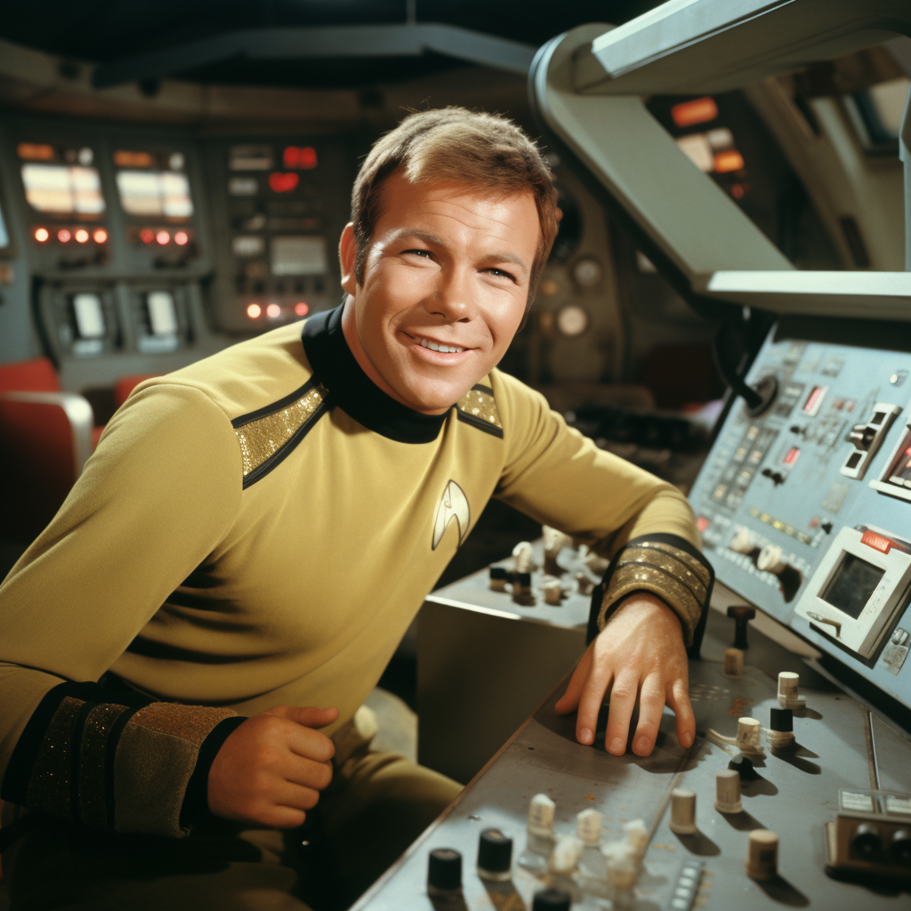
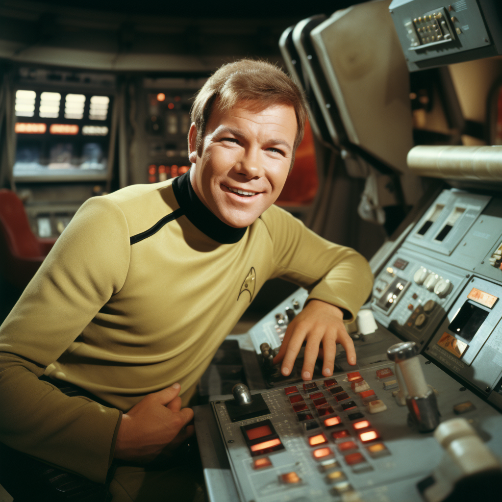
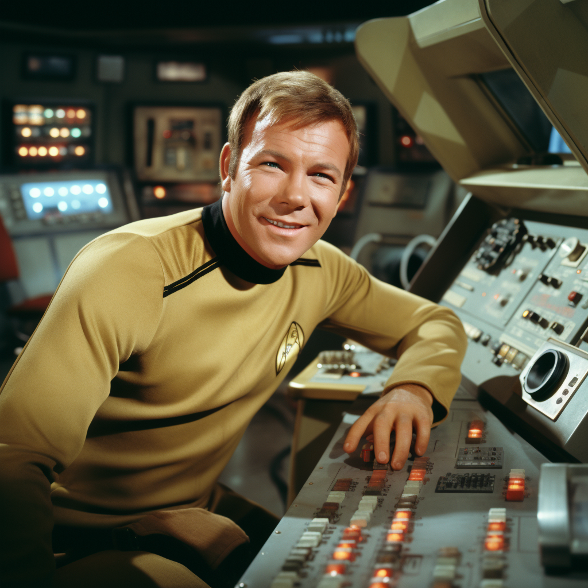

Preferred Orion cornerstone · 1.21× edit
Orion’s Baby Daddy
Preferred shorter version · 2:44
The faster alternate currently preserved in the repository; the register’s original 3:30 timing is retained as source history.Orion nightclub · Kirk tribute
A working production shelf for the Kirk character video: three connected recordings, the recovered lyric treatment, 18 portrait candidates, one model, and an honest tracker for the storyboard and motion material still to be assembled.
Preferred Orion cornerstone · 1.21× edit
Preferred shorter version · 2:44
The faster alternate currently preserved in the repository; the register’s original 3:30 timing is retained as source history.Orion performance candidate
Local review file · 2:32
The earlier theatrical Orion treatment.Primary disco selection
Local review file · 3:40
The selected Orion-disco centerpiece and current recording reference for the recovered lyric treatment.Recovered treatment
Complete working lyric draft
The final chorus is directed as theatrical spoken word—not sung—with pauses, pitch changes, and retro science-fiction grandeur.3D reference · review candidate
25.6 MB · geometry only
A local model is preserved with the visual candidates. It has not been approved as final production art.












Needed · not yet recovered
No dedicated shot list, storyboard panels, animatic, or Kirk motion clips are present in the consolidated repository.
The 18 portraits give us character coverage, but we still need wides, Orion performance imagery, bridge action, supporting characters, and transitions timed to the selected 3:40 track.